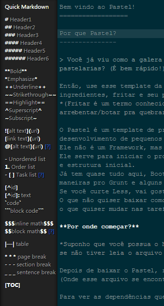
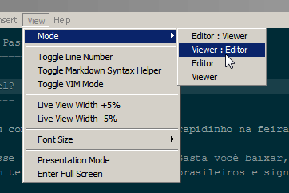
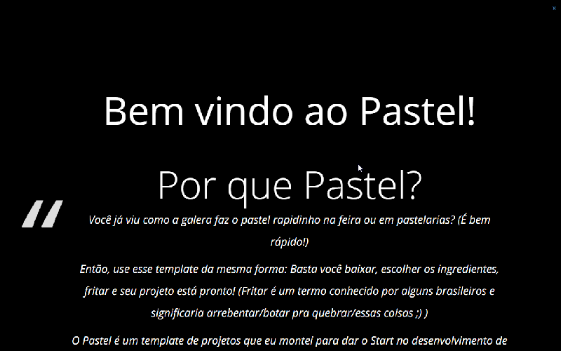

Todo mundo que trabalha usando Markdown ou usa a linguagem somente para descrever seus repositórios no Github gosta de ter aquele preview maneiro que o Mou apresenta né? Pois é, mas o Mou não funciona em outras plataformas a não ser Apple. :( #chateado
Conheça o Haroopad!
Para suprir a necessidade daquele preview show eu andei pesquisando e venho utilizando o Haroopad a uns 4 meses. É uma ferramenta muito maneira e atende bem as necessidades. Da uma olhada nesse print:

Instalação
A instalação é bem simples, baixa acessar o site do Haroopad e escolher seu sistema operacional.
Algumas qualidades do Editor
O modo Full Screen é básico em todos os editores, então nem vou comentar… ;P
Syntax Help
O principal é o Syntax Help. Você ativa clicando no botão de configurações e ele aparece na lateral. Isso ajuda muito a lembrar as Tags!
Ativando

A lateral com ajuda

Modos de visualização
Clicando em View, será apresentado um menu com algumas opções de visualização como modo somente editor e modo somente visualização.

Ainda em View, da para colocar os números das linhas clicando em Toogle Line Number.

Modo de apresentação
O modo de apresentação dele é bem maneiro e para ativar é no mesmo esquema: View -> Presentation Mode

As opções de insert
Caso você esqueça algum esquema da Linguagem, você pode utilizar também o menu Insert para inserir as tags lá. (Facin)

Eu curti bastante esse editor e venho utilizando ele. Se você tiver alguma dica, comenta ae! :D